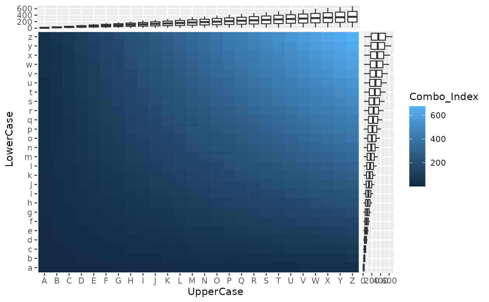
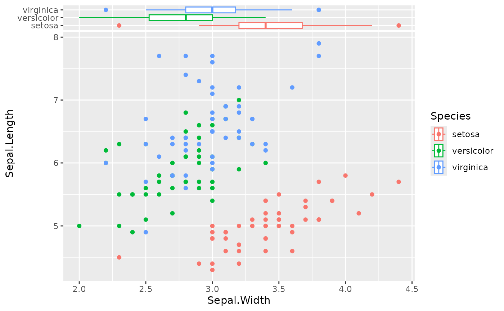
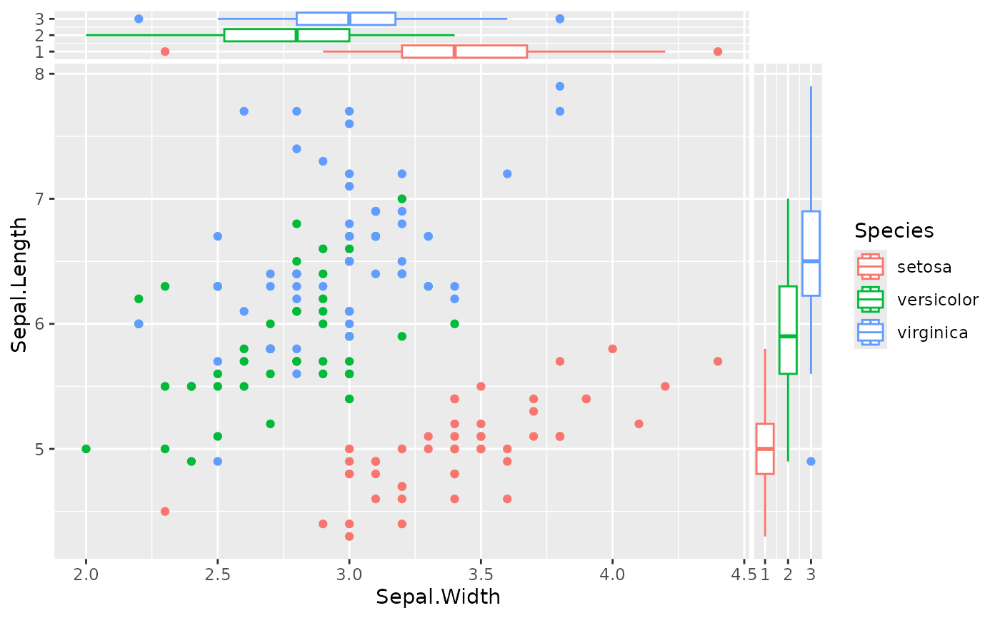

The xside and yside variants of geom_boxplot is geom_xsideboxplot and geom_ysideboxplot.
geom_xsideboxplot(
mapping = NULL,
data = NULL,
stat = "boxplot",
position = "dodge2",
...,
outliers = TRUE,
outlier.colour = NULL,
outlier.color = NULL,
outlier.fill = NULL,
outlier.shape = NULL,
outlier.size = NULL,
outlier.stroke = 0.5,
outlier.alpha = NULL,
whisker.colour = NULL,
whisker.color = NULL,
whisker.linetype = NULL,
whisker.linewidth = NULL,
staple.colour = NULL,
staple.color = NULL,
staple.linetype = NULL,
staple.linewidth = NULL,
median.colour = NULL,
median.color = NULL,
median.linetype = NULL,
median.linewidth = NULL,
box.colour = NULL,
box.color = NULL,
box.linetype = NULL,
box.linewidth = NULL,
notch = FALSE,
notchwidth = 0.5,
staplewidth = 0,
varwidth = FALSE,
na.rm = FALSE,
orientation = "x",
show.legend = NA,
inherit.aes = TRUE
)
geom_ysideboxplot(
mapping = NULL,
data = NULL,
stat = "boxplot",
position = "dodge2",
...,
outliers = TRUE,
outlier.colour = NULL,
outlier.color = NULL,
outlier.fill = NULL,
outlier.shape = NULL,
outlier.size = NULL,
outlier.stroke = 0.5,
outlier.alpha = NULL,
whisker.colour = NULL,
whisker.color = NULL,
whisker.linetype = NULL,
whisker.linewidth = NULL,
staple.colour = NULL,
staple.color = NULL,
staple.linetype = NULL,
staple.linewidth = NULL,
median.colour = NULL,
median.color = NULL,
median.linetype = NULL,
median.linewidth = NULL,
box.colour = NULL,
box.color = NULL,
box.linetype = NULL,
box.linewidth = NULL,
notch = FALSE,
notchwidth = 0.5,
staplewidth = 0,
varwidth = FALSE,
na.rm = FALSE,
orientation = "y",
show.legend = NA,
inherit.aes = TRUE
)Set of aesthetic mappings created by aes(). If specified and
inherit.aes = TRUE (the default), it is combined with the default mapping
at the top level of the plot. You must supply mapping if there is no plot
mapping.
The data to be displayed in this layer. There are three options:
If NULL, the default, the data is inherited from the plot
data as specified in the call to ggplot().
A data.frame, or other object, will override the plot
data. All objects will be fortified to produce a data frame. See
fortify() for which variables will be created.
A function will be called with a single argument,
the plot data. The return value must be a data.frame, and
will be used as the layer data. A function can be created
from a formula (e.g. ~ head(.x, 10)).
The statistical transformation to use on the data for this layer.
When using a geom_*() function to construct a layer, the stat
argument can be used to override the default coupling between geoms and
stats. The stat argument accepts the following:
A Stat ggproto subclass, for example StatCount.
A string naming the stat. To give the stat as a string, strip the
function name of the stat_ prefix. For example, to use stat_count(),
give the stat as "count".
For more information and other ways to specify the stat, see the layer stat documentation.
A position adjustment to use on the data for this layer. This
can be used in various ways, including to prevent overplotting and
improving the display. The position argument accepts the following:
The result of calling a position function, such as position_jitter().
This method allows for passing extra arguments to the position.
A string naming the position adjustment. To give the position as a
string, strip the function name of the position_ prefix. For example,
to use position_jitter(), give the position as "jitter".
For more information and other ways to specify the position, see the layer position documentation.
Other arguments passed on to layer()'s params argument. These
arguments broadly fall into one of 4 categories below. Notably, further
arguments to the position argument, or aesthetics that are required
can not be passed through .... Unknown arguments that are not part
of the 4 categories below are ignored.
Static aesthetics that are not mapped to a scale, but are at a fixed
value and apply to the layer as a whole. For example, colour = "red"
or linewidth = 3. The geom's documentation has an Aesthetics
section that lists the available options. The 'required' aesthetics
cannot be passed on to the params. Please note that while passing
unmapped aesthetics as vectors is technically possible, the order and
required length is not guaranteed to be parallel to the input data.
When constructing a layer using
a stat_*() function, the ... argument can be used to pass on
parameters to the geom part of the layer. An example of this is
stat_density(geom = "area", outline.type = "both"). The geom's
documentation lists which parameters it can accept.
Inversely, when constructing a layer using a
geom_*() function, the ... argument can be used to pass on parameters
to the stat part of the layer. An example of this is
geom_area(stat = "density", adjust = 0.5). The stat's documentation
lists which parameters it can accept.
The key_glyph argument of layer() may also be passed on through
.... This can be one of the functions described as
key glyphs, to change the display of the layer in the legend.
Whether to display (TRUE) or discard (FALSE) outliers
from the plot. Hiding or discarding outliers can be useful when, for
example, raw data points need to be displayed on top of the boxplot.
By discarding outliers, the axis limits will adapt to the box and whiskers
only, not the full data range. If outliers need to be hidden and the axes
needs to show the full data range, please use outlier.shape = NA instead.
Default aesthetics for outliers. Set to NULL to inherit from the
data's aesthetics.
Default aesthetics for the whiskers. Set to NULL to inherit from the
data's aesthetics.
Default aesthetics for the staples. Set to NULL to inherit from the
data's aesthetics. Note that staples don't appear unless the staplewidth
argument is set to a non-zero size.
Default aesthetics for the median line. Set to NULL to inherit from the
data's aesthetics.
Default aesthetics for the boxes. Set to NULL to inherit from the
data's aesthetics.
If FALSE (default) make a standard box plot. If
TRUE, make a notched box plot. Notches are used to compare groups;
if the notches of two boxes do not overlap, this suggests that the medians
are significantly different.
For a notched box plot, width of the notch relative to
the body (defaults to notchwidth = 0.5).
The relative width of staples to the width of the box. Staples mark the ends of the whiskers with a line.
If FALSE (default) make a standard box plot. If
TRUE, boxes are drawn with widths proportional to the
square-roots of the number of observations in the groups (possibly
weighted, using the weight aesthetic).
If FALSE, the default, missing values are removed with
a warning. If TRUE, missing values are silently removed.
The orientation of the layer. The default (NA)
automatically determines the orientation from the aesthetic mapping. In the
rare event that this fails it can be given explicitly by setting orientation
to either "x" or "y". See the Orientation section for more detail.
logical. Should this layer be included in the legends?
NA, the default, includes if any aesthetics are mapped.
FALSE never includes, and TRUE always includes.
It can also be a named logical vector to finely select the aesthetics to
display. To include legend keys for all levels, even
when no data exists, use TRUE. If NA, all levels are shown in legend,
but unobserved levels are omitted.
If FALSE, overrides the default aesthetics,
rather than combining with them. This is most useful for helper functions
that define both data and aesthetics and shouldn't inherit behaviour from
the default plot specification, e.g. annotation_borders().
XLayer or YLayer object to be added to a ggplot object
df <- expand.grid(UpperCase = LETTERS, LowerCase = letters)
df$Combo_Index <- as.integer(df$UpperCase)*as.integer(df$LowerCase)
p1 <- ggplot(df, aes(UpperCase, LowerCase)) +
geom_tile(aes(fill = Combo_Index))
#sideboxplots
p1 + geom_xsideboxplot(aes(y = Combo_Index)) +
geom_ysideboxplot(aes(x = Combo_Index)) +
#when mixing continuous/discrete scales
#use the following helper functions
scale_xsidey_continuous() +
scale_ysidex_continuous()

#sideboxplots with swapped orientation
#Note: They order of the layers are affects the default
# scale type. If you were to omit the last two scales, the
# data labels may be affected
ggplot(iris, aes(Sepal.Width, Sepal.Length, color = Species)) +
geom_xsideboxplot(aes(y = Species), orientation = "y") +
geom_point() +
scale_y_continuous() + scale_xsidey_discrete()

#If using the scale_(xsidey|ysidex)_* functions are a bit cumbersome,
# Take extra care to recast your data types.
ggplot(iris, aes(Sepal.Width, Sepal.Length, color = Species))+
geom_point() +
geom_xsideboxplot(aes(y = as.numeric(Species)), orientation = "y") +
geom_ysideboxplot(aes(x = as.numeric(Species)), orientation = "x")
